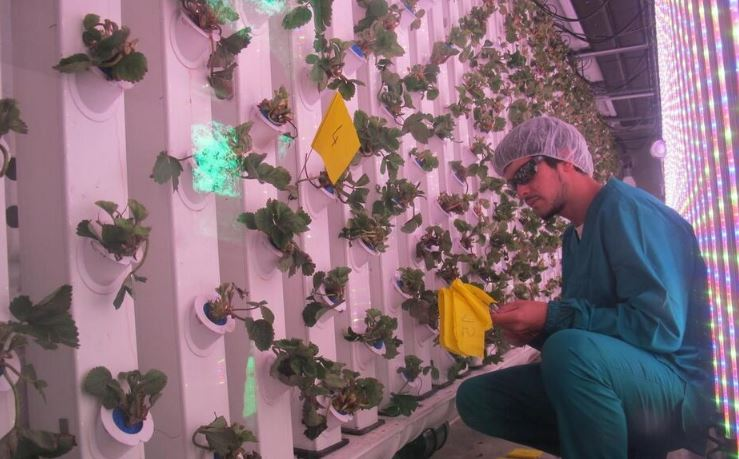

Agricool es un proyecto revolucionario que está transformando los contenedores marítimos en huertos urbanos. Dos amigos emprendedores, hijos de granjeros, demostraron que es posible disfrutar de deliciosas frutas y verduras frescas, producidas localmente y libres de pesticidas, directamente en tu vecindario. Gonzague y Guillaume decidieron crear Agricool, la propuesta de un sistema innovador que está cambiando la forma en que consumimos alimentos.
Reciclando los contenedores, con iluminación, aire, equipo de riego y paneles solares, hallaron la solución perfecta para cultivar frutas y vegetales en entornos urbanos de manera económica y sustentable. Estas granjas urbanas verticales son 120 veces más productivas que la agricultura tradicional. Allí cultivan fresas, lechuga, perejil, cilantro y albahaca, entre otras variedades.
Agricool ofrece productos sabrosos, que llegan a tus manos tan frescos como los brotes. Esta empresa está 100% comprometida con la sustentabilidad, y gracias a su sistema ahorran el 90% de agua y aprovechan la energía solar. También destacan por su accesibilidad. Al ubicar sus huertos en la ciudad y distribuir los productos en comercios cercanos, evitan los costosos viajes de miles de kilómetros y los impuestos de importación, lo que se traduce en precios asequibles para todos.
Con un éxito notable desde su lanzamiento en 2015 en Francia, Agricool tiene grandes planes para el futuro. Su objetivo es expandirse a todas las ciudades del país y ampliar su lista de productos, para que tu refrigerador esté lleno de alimentos orgánicos que no dañen tu bolsillo.
Agricool te ofrece la posibilidad de ser parte del movimiento que está cambiando la forma en que cultivamos y consumimos nuestros alimentos. Vos también podés emprender y contribuir al desarrollo sostenible de tu comunidad.